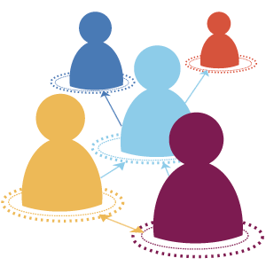
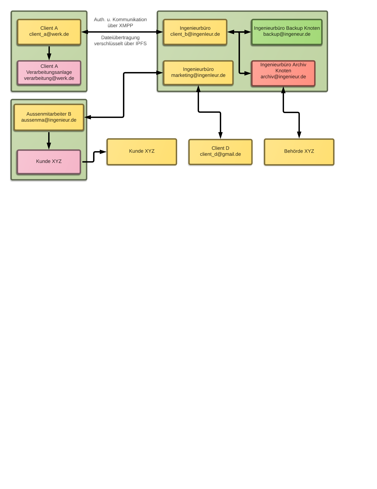
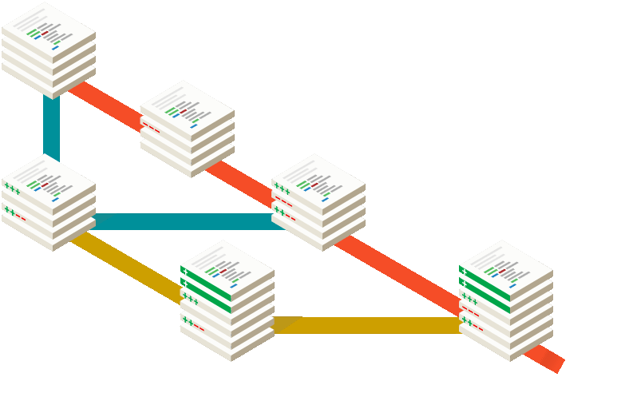
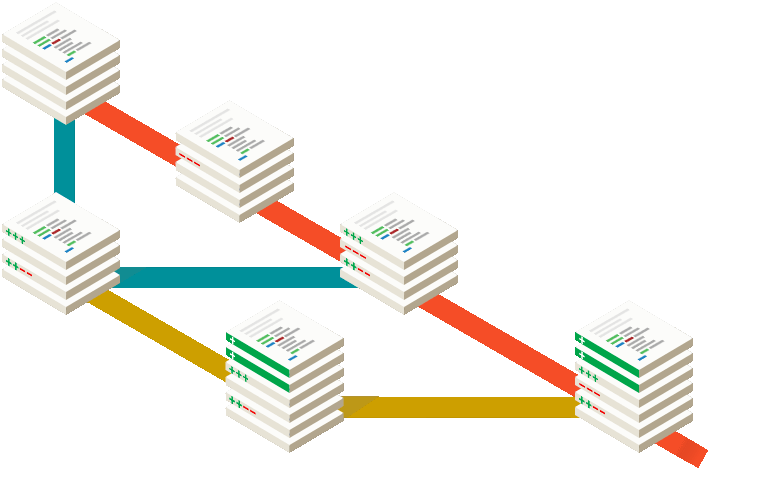

Forschung und Entwicklung zum Thema: Dateisynchronisation
Notes.
Was haben wir vor
Warum nicht zentral?
Vorgehen:
- Erst Masterarbeit, evtl. mit F&E.
- Dann Exist Gründerkredit um Weiterentwicklung zu gewährleisten.
- Ziel: Wissenschaftliche Mitarbeiter um Forschung zu ermöglichen.
Knoten-Typen:
- Normaler Client
- Archivierungsknoten
- Backupknoten
- ...
- Nicht verhandelbar. :-)
,, git für große Dateien in einfach.''
- Dezentrale, sichere Alternative zu Dropbox und Konsorten.
- Entwicklung eines simplen Prototypen als Masterarbeit.
- Einsatz bewährter Sicherheits-Standards.
- Heterogenes Netzwerk mit verschiedenen Knoten-Typen.
Hauptaugenmerk:
- Datenintegrität und Sicherheit.
- aber auch einfache Benutzbarkeit.
- Kontrolle der Daten liegt vollständig beim Nutzer.
Dezentrales Netz
Kernpunkte
- Open Source Software und offene Entwicklung.
- Erweiterung durch Unternehmen, User und Interessenten.
- Entwicklung in der Programmiersprache Go ⇒ Portabel.
- ipfs als mögliche Basis ⇒ Effiziente Übertragung.
- Möglichkeit zur Volltextsuche über alle Dokumente.


Weitere Ideen
- XMPP: Anbindung an LDAP möglich.
- Nutzung vorhandener XMPP Infrastruktur für dezentrale Kommunikation.
- Dadurch erweiterbar: Authentifizierung über XMPP und Anbindung an LDAP möglich.
- Unternehmenstaugliche Zwei-Faktor-Authentifizierung über beispielsweise RSA-Token oder Yubikey möglich.
- Mögliche Versionsverwaltung mittels Archivknoten.


 
Fragen?